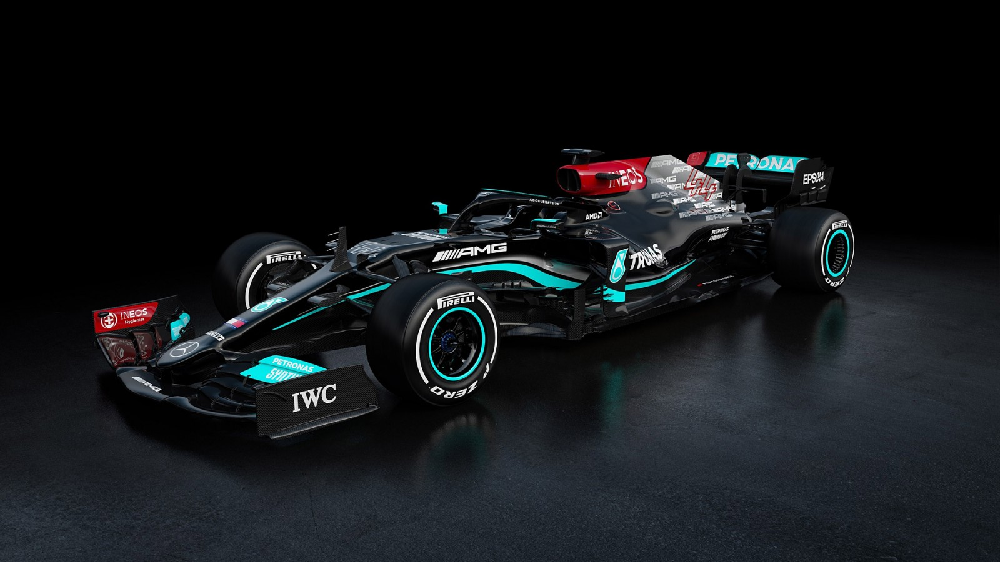

«Формула-1» — высший класс гонок на автомобилях с открытыми колёсами, санкционированный Международной автомобильнойфедерацией (ФИА).
Турнир находится под управлением Международной автомобильной федерации, ответственной за продвижение на данный момент является группа компаний Formula One Group. Чемпионат мира проводится каждый год и состоит из отдельных этапов, имеющих статус Гран-при-, в конце года подводятся итоги турнира, с учётом суммы набранных очков за сезон. В Формуле-1 соревнуются как отдельные пилоты (за титул Чемпиона мира), так и команды (за Кубок конструкторов).
Техника участников должна соответствовать техническому регламенту «Формулы-1» и пройти тест на ударопрочность. Команды, участвующие в гонках «Формулы-1», используют на Гран-при болиды (гоночные автомобили) собственного производства. Таким образом, задачей команды является не только нанять быстрого и опытного пилота и обеспечить грамотную настройку и обслуживание машины, но и вообще самостоятельно спроектировать и сконструировать болид. Но бывают и исключения. Например, шасси команд Red Bull Racing и Scuderia Toro Rosso были очень похожи, почти идентичны, вплоть до 2009 года. Они были спроектированы и изготовлены компанией Red Bull Technology, так как обе команды и компания-изготовитель принадлежат концерну Red Bull GmbH.
